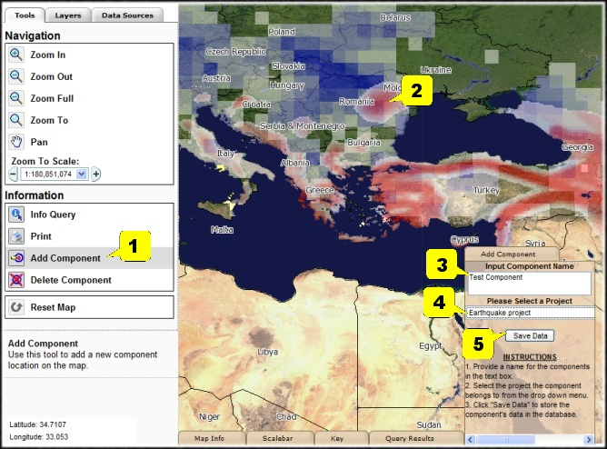

|
|
Please click HERE to view MIRISK
help file in pdf format. (v. 0.1: 21 May 07)
For a TUTORIAL/DEMO of how to use MIRISK, please click
HERE.
File size is 5MB. Depending on your connection and server traffic,
it may take some time to download.
This HELP includes an Overview, Work Flow explanation, and more detailed Technical Information, and consists of the following sections (click to go directly to a section):
First time users should read the Overview and Work Flow (the next two
sections). More detailed technical information follows, which users
may refer to as they continue to use MIRISK, so as to better
understand the basis for the data and analyses MIRISK provides
(including the limitations thereof). A Glossary is provided, to
define jargon and specialist terms.
Note that there is a MIRISK Tutorial, accessed from the MAIN Page.
First Time Users should take the 10 minute Tutorial.
Back to top
A Natural Disaster can destroy years of Development in a few seconds.
This is because building design codes are only a minimum level of design.
That is, the purpose of normal building design codes is not to
eliminate all damage given a major earthquake, flood or tropical
cyclone. Rather, the code's purpose is to prevent major loss of
life - significant damage is acceptable per modern building codes,
if not many people die.
It can be very wise, and cost-effective, for a Development Manager to
require a moderately enhance level of construction for natural
hazards for a Project.
This is especially true when one considers the total costs of damage,
in terms of Project loss of use ("business interruption").
MIRISK (Mitigation Information and Risk Identification System) is a
tool to help Development Managers consider natural hazards risk, and
ways to reduce that risk, by:
Natural hazards currently considered are earthquakes, flood, tropical
cyclone, and volcanism.
MIRISK's basic purpose is to allow a Development Manager to quickly
learn if natural hazards are very significant in a region where the
Manager is considering development. If so, MIRISK provides
information on what can be done, and permits estimation of the added
cost for a moderately enhanced level of construction for natural
hazards. An 'optimum' level of enhanced construction is
estimated, based on the degree of hazard, the type of facility, and
the Project's benefit cost ratio (BCR, used to account for
indirect costs of damage).
Back to top
A MIRISK user accesses four basic tabs or screens:
as well the Main, Help, About and Feedback tabs. Tabs 1-4 however are
all that need be followed to perform an analysis. Sections 3.1 to 3.4
describe Tabs 1-4.
Back to top
This screen is for administrative purposes - the user enters data
for a new project, or resumes a previously saved project. Information
recorded here are project identifier data, users names, and related
information needed for administrative purposes.
Back to top
The first step in risk analysis is to learn if a project component is located in
a high hazard region (ie, what nature may put there).
When the LOCATION/HAZARD tab is clicked, a map of the world is seen
(and possibly some components numbers showing the Users previously
identified component). Users locate their component by:
When the region is located, the degree of Earthquake, Wind, Flood or
Volcano risk for a region can be seen via color codes (click Key tab
on the bottom to see the degrees of risk, which are explained further
below, under HAZARD DATA).
The LAYERS tab on the left controls what is visible on the map -
all Hazards, Components and other information can be turned on or
off. The map can also be queried to learn the degree of risk at any
location.
Back to top
The second step in risk analysis is to define what the component
consists of, in terms of types of facilities and construction (ie,
what you are thinking of putting there).
On the page you define your component by clicking on some menus, and
MUST input ASSET VALUE DATA (e.g. anticipated component cost, for
construction and including overhead) and component BENEFIT COST RATIO
(BCR). The component cost and BCR are used for a benefit-cost
assessment. BCR is the estimate of the total component benefit
(including some monetized estimate of future social benefits), divided
by the total component cost.
To Define the component when the ASSET tab is clicked, you can
either:
When the Category Class (e.g. Low Rise Reinforced Masonry or
Reinforced Concrete) is selected, the DESCRIPTION, DAMAGE AND DESIGN
INFORMATION ON ASSETS pane changes, to provide photographs and a
description of the class, its Vulnerability to various hazards and how
to reduce (mitigate) the vulnerability. By reading these descriptions,
a Development Manager can quickly gain some familiarity with what
these various Classes are, how they are damaged by natural hazards
and, in general, what are some of the techniques used to reduce their
vulnerability to natural hazards. This information provides a good
background for users not expert in natural hazards mitigation.
Back to top
This MIRISK tab summarizes the input information, and uses it to estimate:
The page can be printed out (hard copy or pdf) as a report for your
project, using the icons on the upper right.
The Results are provided for the various hazards, and consist of the
expected cost of construction for minimum code, and for some
moderately enhanced level of construction (for natural hazards). The
enhanced level is shown as a factor (eg, 1.02) which represents
designing the component (asset) for "2%" more than the minimum code
requirement for the component for that site. Enhancing the level of
construction increases the cost of construction, and an estimate of
that increased cost is shown in the table on this tab.
When a natural hazard occurs, such as an earthquake or tropical
cyclone, damage is likely to occur, especially if the component was
designed only per the minimum building code requirements. This is
because the purpose of normal building design codes is not to
eliminate all damage given a major earthquake, flood or tropical
cyclone. Rather, the code's purpose is to prevent major loss of
life - significant damage is acceptable per modern building codes,
if not many people die.
Therefore, the cost of damage and associated losses are estimated for
minimal code level design. The technical details of this estimation
are discussed further below, but basically the MIRISK estimates the
cost of damage from a database of such costs for various hazards and
types of facilities. It includes in this loss estimate not only the
direct cost of repairs to the facility, but also the associated costs
of loss of use of the facility (eg, renting another facility while the
first is repaired). These associated costs are estimated using the
BCR input by the User.
In return for the increased expenditure for natural hazards, the
enhanced level of construction should have less damage when a natural
hazard occurs. Therefore, the cost of damage and associated losses
are estimated for not only for minimal code level design, but also for
each level of design, from 1.0 (minimum code requirement) to 1.4 (40%
greater than minimum code). These are tabulated in the Results
Table.
Lastly, the Total Cost of the component, which is the sum of the cost of
construction (increasing with enhanced level of design) plus the cost
of damage and associated losses (decreasing with enhanced level of
design), are tabulated.
The minimum Total Cost is the 'optimum' enhanced level of
construction design for the component.
The results are presented in tabular form, and graphically, for each
hazard.
Back to top
This section walks the User through an example analysis.
This is the opening screen.
Back to top
This is Tab 1: Project Data. You can enter project admin data here.
Back to top
This is Tab 2: Location/Hazard Data.
Back to top
Adding a component:

Back to top
This is Tab 3: Component (Asset) Data. Here you can enter the
component (asset) data needed for the cost benefits assessment
calculations and also get information on various types of assets,
their natural hazards vulnerabilities and mitigations.
Here is the procedure to follow:
The bootom pane of the "Component (Asset) Data".
Back to top
This is Tab 4: Analysis/Report. User (1) selects project and
component; (2) clicks on "Analysis & Report", and then below
Results appear, consisting of Project Input data etc,
and estimated Expected Annualized Loss
(EAL) for design level factor = 1 (minimum code), related data,
and tabulated and graphed results of a benefit-cost analysis for
various natural hazards affecting the component (asset) at the specified
site. Optimum enhanced code levels are easily seen, as well as
added construction cost and Total Cost Savings for the
component. Icons permit printing or creating a pdf.
Analysis results in tabular and graphical form.
Back to top
LOCATION: Location is specified in MIRISK in one of three ways:
by specifying a lat/long, by inputting a geographic place name, or
by zooming in on the global composite photograph and clicking on a
point. Of the three methods, zooming and clicking is by far the
easiest, and more accurate than specifying a place name. If
accurate lat/long data are available for the site of interest,
this should be employed. The place name gazetteer currently
employed in MIRISK is rather limited, with only about 2,000 place
names. Much larger gazetteers are available, and an 80,000 place
name data set was initially tried in MIRISK, but this dataset
proved problematic. In the future, a more extensive gazetteer
should be employed in MIRISK, although any international gazetteer
will always have orthographic issues.
HAZARD: The HAZARD data used in MIRISK version 1.0 are derived from
the Global Hotspots* data set, which itself is a compilation of
other datasets on a 2 by 2 degree lat/long grid. As noted in the
Hotspots report: "...globally uniform data do not yet exist to
produce a justifiable measure of hazard severity that can be
applied consistently across multiple hazards." That is, both
the Hotspots project and MIRISK have had to make assumptions at
several stages, in order to permit any analysis at all to be
performed. Best professional judgment was used, and the results
are believed to be approximately correct, although significant
improvements are possible with further work. Specific Hotspots
data employed in MIRISK are:
* Dilley, M., Chen, R. S., Deichmann, U., Lemer-Lam, A. L., and
Arnold, M. (2005). "Natural Disaster Hotspots: A Global Risk
Analysis." No. 5, Hazards Management Unit, The World Bank,
Washington, 142pp
** GSHAP: Global Seismic Hazard Map, Produced by the Global Seismic
Hazard Assessment Program (GSHAP), a demonstration project of the
UN/International Decade of Natural Disaster Reduction, conducted
by the International Lithosphere Program. Global map assembled by
D. Giardini, G. Grünthal,
1999. (www.seismo.ethz.ch/GSHAP/)
Back to top
The ASSET data set consists of:
Taxonomy, consisting of three Asset Categories (Buildings,
Transportation, Utilities) which are further divided into a total of
32 Category classes (eg, wood buildings, chimneys, at grade tanks,
etc).
The taxonomy and associated vulnerability data (discussed below) are
based on the ATC-13 data set*. The ATC-13 data set were developed
specific to California construction. For MIRISK, some adjustments
were made since most MIRISK applications will be in developing
countries, although it should be noted that most MIRISK applications
will be for new construction per modern building codes per typical
World Bank practice. That is, MIRISK applications are not for
existing construction, which may be of much poorer quality than that
built under Bank funding. Nevertheless, additional work for more
accurate vulnerability data is an area for potential MIRISK
improvement.
* Applied Technology Council. (1985). "Earthquake Damage Evaluation
Data for California." ATC-13, Applied Technology Council, Redwood
City, 492pp.
Back to top
The Analysis methodology follows a standard benefit-cost framework, in
which normal code design is taken as a given baseline. Normal
building codes are written to assure life safety, and not to minimize
property damage, so that significant property damage is likely to be
sustained by even new construction designed per modern building codes,
when subjected to higher intensity natural hazards. This is
well-known*, and has led to the recent emergence of performance-based
design in the structural engineering field**. Consequently, there is
a substantial risk of economic loss given normal building code
design. This loss is not only direct property loss (ie, cost of
repair) but also the attendant loss of use and associated expenses
(so-called indirect loss).
Direct loss is accounted for by using the vulnerability functions of
ATC-13 for the specific Category class, and the hazard as determined
for the site from the Hotspots data (including the assumptions as
discussed above). The hazard is however only a point estimate, and
the entire hazard curve is calculated based on the assumption that the
hazard frequency follows the Ishimoto-Iida law (ie, log-log relation)
with a slope of 1.0.
Indirect loss is accounted for by multiplying the direct loss by the
Benefit-Cost Ratio (BCR) for the Component, as input by the User.
Bank project BCRs vary from 1 to as much as 10, with an average value
being about 6.0.
The expected annual loss (EAL) for the Component is then calculated by
numerical integration of the vulnerability and hazard functions, over
all values of hazard. The present value of all future losses is then
calculated as the EAL divided by the real interest rate (this assumes
an infinite economic life, which slightly overestimates the present
value, but is not a bad assumption in general). Real interest rates
vary, but an average value of 0.03 per annum is a reasonable value in
many cases.
The above algorithm can be applied for normal code design (denoted as
DLF, or Design Level Factor, 1.0), or for any enhanced design. If the
normal code requirement for a natural hazard is increased by 10% (eg,
earthquake design is for 0.22g, rather than for 0.20g, lateral force),
this is denoted as a DLF=1.10. If a Component is designed for a
DLF=1.1, damage due to natural hazards will be significantly
decreased, with only a marginally higher capital investment for the
increased design. As DLF increases, damage drops sharply at first, and
then diminishingly less, while capital investment is very modest at
first, and then increases rapidly. For any given DLF, the sum of the
present value of all future damages, and the increase in capital
investment, is the Total Cost above normal building code design. The
curve of Total Cost as a function of DLF has a typical U shape, where
the minimum Total Cost is the optimum DLF.
MIRISK calculates the present value of all future damages, the
increase in capital investment, the Total Cost above normal building
code design, and presents these results in summary form for
earthquake, tropical cyclone and flood, and in a detailed tabulation
(with the optimum DLF highlighted in yellow), and graph. If any
hazard is particularly low, the results are not presented, but simply
it is noted that that particular hazard is 'not applicable'.
The optimum DLF is what makes economic sense. While the MIRISK data
and methods are only preliminary, they provide guidance as to what
hazards exist for a site, what the natural hazards performance is
likely to be for the Component to be constructed, what is an optimum
DLF for the situation, what should be budgeted by the Bank to achieve
an economic optimum performance considering natural hazards, and what
the savings are given this policy.
* Hamburger, R.O. (2003) Building Code Provisions for Seismic
Resistance, chapter in Chen, W.-F., and Scawthorn,
C. (2003). "Earthquake Engineering Handbook." New Directions in Civil
Engineering, CRC Press, CRCnetBASE (Online service), Co-published by
the International Conference of Building Officials and co-sponsored by
the National Council of the Structural Engineers Association, Boca
Raton, Fla., 1512pp.
** SEAOC. 1996.Vision 2000, A Framework for Performance-based Seismic
Design, Structural Engineers Association of California, Sacramento,
CA.
Back to top
| - A - | |
|---|---|
| Aa | Hawaiian word used to describe a lava flow whose surface is broken into rough angular fragments. |
| Active volcano | A volcano that is erupting. Also, a volcano that is not presently erupting but that has erupted within historical time and is considered likely to do so in the future. |
| Andesite | Volcanic rock (or lava) characteristically medium dark in color and containing 54 to 62 percent silica and moderate amounts of iron and magnesium. |
| Ash | Fine particles of pulverized rock blown from an explosion vent. Measuring less than 1/10 inch in diameter, ash may be either solid or molten when first erupted. By far the most common variety is vitric ash, glassy particles formed by gas bubbles bursting through liquid magma. |
| Ash flow | A turbulent mixture of gas and rock fragments, most of which are ash-sized particles, ejected violently from a crater or fissure. The mass of pyroclastics is normally of very high temperature and moves rapidly down the slopes, or even along a level surface. |
| Ashfall (Airfall) | Volcanic ash that has fallen through the air from an eruption cloud. A deposit so formed is usually well sorted and layered. |
| Attenuation | The rate at which earthquake ground motion decreases with distance. |
| Avalanche | A large mass of material or mixtures of material falling or sliding rapidly under the force of gravity. Avalanches often are classified by their content, such as snow, ice, soil, or rock avalanches. A mixture of these materials is a debris avalanche. |
| Average wind speed | Speed of the wind averaged over the previous 10 minutes (mean surface wind) as read from the anemogram or the 3 minutes mean determined with the non-recording anemometer or estimated wind at sea by the mariners using the Beaufort scale. |
| - B - | |
| Basalt | Volcanic rock (or lava) that characteristically is dark in color, contains 45 to 54 percent silica, and generally is rich in iron and magnesium. |
| Benefit-cost Ratio (BCR) | BCR is the estimate of the total project benefit (including some monetized estimate of future social benefits), divided by the total project cost. |
| Block | Angular chunk of solid rock ejected during an eruption. |
| Bomb | Fragment of molten or semi-molten rock, 2 1/2 inches to many feet in diameter, which is blown out during an eruption. Because of their plastic condition, bombs are often modified in shape during their flight or upon impact. |
| - C - | |
| Caldera | The Spanish word for cauldron, a basin-shaped volcanic depression; by definition, at least a mile in diameter. Such large depressions are typically formed by the subsidence of volcanoes. Crater Lake occupies the best-known caldera in the Cascades. |
| Central pressure of a tropical cyclone | Surface pressure at the centre of the tropical cyclone as measured or estimated. |
| Centre of the tropical cyclone | The centre of the cloud eye, or if not discernible, of the wind/pressure centre. |
| Cinder cone | A volcanic cone built entirely of loose fragmented material (pyroclastics.) |
| Composite volcano | A steep volcanic cone built by both lava flows and pyroclastic eruptions. |
| Continental crust | Solid, outer layers of the earth, including the rocks of the continents. |
| Continental drift | The theory that horizontal movement of the earth's surface causes slow, relative movements of the continents toward or away from one another. |
| Crater | A steep-sided, usually circular depression formed by either explosion or collapse at a volcanic vent. |
| Cyclone | Tropical cyclone |
| Cyclonic storm | A cyclonic disturbance in which the maximum average surface wind speed is in the range of 34 to 47 knots (62 to 88 km/h). |
| - D - | |
| Dacite | Volcanic rock (or lava) that characteristically is light in color and contains 62 to 69 percent silica and moderate amounts of sodium and potassium. |
| Damage | Physical disruption, such as cracking in walls, overturning of cabinets etc (often used synonymously with loss) |
| Debris avalanche | A rapid and unusually sudden sliding or flowage of unsorted masses of rock and other material. As applied to the major avalanche involved in the eruption of Mount St. Helens, a rapid mass movement that included fragmented cold and hot volcanic rock, water, snow, glacier ice, trees, and some hot pyroclastic material. Most of the May 18 deposits in the upper valley of the North Fork Toutle River and in the vicinity of Spirit Lake are from the debris avalanche. |
| Depression | A cyclonic disturbance in which the maximum sustained
surface wind speed is between 17 and 33 knots (31 and 61
km/h). If the maximum sustained wind speed lies in the
range 28 knots (52 km/h) to 33 knots (61 km/h) the system
may be called a "deep depression".* A cyclonic disturbance in which the maximum sustained surface wind speed is between 22 and 33 knots (41 and 61 km/h. If the maximum sustained wind speed lies in the range 28 knots (52 km/h) to 33 knots (61 km/h) the system may be called a "deep depression".+ |
| Detachment plane | The surface along which a landslide disconnects from its original position. |
| Dome | A steep-sided mass of viscous (doughy) lava extruded from a volcanic vent, often circular in plane view and spiny, rounded, or flat on top. Its surface is often rough and blocky as a result of fragmentation of the cooler, outer crust during growth of the dome. |
| Dormant volcano | Literally, "sleeping." The term is used to describe a volcano which is presently inactive but which may erupt again. Most of the major Cascade volcanoes are believed to be dormant rather than extinct. |
| Ductile detailing | Special requirements such as, for reinforced concrete and masonry, close spacing of lateral reinforcement to attain confinement of a concrete core, appropriate relative dimensioning of beams and columns, 135 degree hooks on lateral reinforcement, hooks on main beam reinforcement within the column, etc) |
| Ductile frames | Frames required to furnish satisfactory load-carrying performance under large deflections (i.e., ductility). in reinforced concrete and masonry this is achieved by ductile detailing. |
| Ductility factor | The ratio of the total displacement (elastic plus inelastic) to the elastic [i.e., yield] displacement. |
| - E - | |
| Ejecta | Material that is thrown out by a volcano, including pyroclastic material (tephra) and, from some volcanoes, lava bombs. |
| Epicenter | The projection on the surface of the earth directly above the hypocenter. |
| Eruption | The process by which solid, liquid, and gaseous materials are ejected into the earth's atmosphere and onto the earth's surface by volcanic activity. Eruptions range from the quiet overflow of liquid rock to the tremendously violent expulsion of pyroclastics. |
| Eruption cloud | The column of gases, ash, and larger rock fragments rising from a crater or other vent. If it is of sufficient volume and velocity, this gaseous column may reach many miles into the stratosphere, where high winds will carry it long distances. |
| Eruptive vent | The opening through which volcanic material is emitted. |
| Extinct volcano | A volcano that is not presently erupting and is not likely to do so for a very long time in the future. |
| Eye of the tropical cyclone | The relatively clear and calm area inside the circular wall of convective clouds, the geometric centre of which is the centre of the tropical cyclone. |
| - F - | |
| Far-field | (beyond near-field), also termed teleseismic. |
| Fault | A zone of the earth's crust within which the two
sides have moved - faults may be hundreds of miles long,
from one to over one hundred miles deep, and not readily
apparent on the ground surface. A crack or fracture in the earth's surface. Movement along the fault can cause earthquakes or, in the process of mountain-building, can release underlying magma and permit it to rise to the surface. |
| Fissures | Elongated fractures or cracks on the slopes of a volcano. Fissure eruptions typically produce liquid flows, but pyroclastics may also be ejected. |
| Flank eruption | An eruption from the side of a valcano (in contrast to a summit eruption.) |
| Focal mechanism | Refers to the direction of slip in an earthquake, and the orientation of the fault on which it occurs. |
| Fracture | A general term for any break in a rock including cracks, joints, and faults. |
| Fragility | The probability of having a specific level of damage given a specified level of hazard. |
| Fumarole | A vent or opening through which issue steam, hydrogen sulfide, or other gases. The craters of many dormant volcanoes contain active fumaroles. |
| - G - | |
| Gale force wind | Average surface wind speed of 34 to 47 knots (62 to 88 km/h). |
| Gust | Instantaneous peak value of surface wind speed, recorded or expected. |
| - H - | |
| Hazard | The potential for or occurrence of natural phenomena, such as ground shaking, liquefaction, tsunami, etc, which might lead to loss. |
| Hurricane force wind | Average surface wind speed 64 knots or more. |
| Hypocenter | The location of initial radiation of seismic waves (i.e., the first location of dynamic rupture). |
| - I - | |
| Intensity | A metric of the effect, or the strength, of an earthquake hazard at a specific location, commonly measured on qualitative scales such as MMI, MSK and JMA. |
| - J - | |
| - K - | |
| - L - | |
| Lahar | A torrential flow of water-saturated volcanic debris down the slope of a volcano in response to gravity. A type of mudflow. Also known as a "glowing avalanche." |
| Lapilli | Literally, "little stones;" round to angular rock fragments measuring 1/10 inch to 2 1/2 inches in diameter, which may be ejected in either a solid or molten state. |
| Lateral force resisting system | A structural system for resisting horizontal forces, due for example to earthquake or wind [as opposed to the vertical force resisting system, which provides support against gravity]. |
| Lava | Magma which has reached the surface through a volcanic eruption. The term is most commonly applied to streams of liquid rock that flow from a crater or fissure. It also refers to cooled and solidified rock. |
| Lava Flow | An outpouring of lava onto the land surface from a vent or fissure. Also, a solidified tongue like or sheet like body formed by outpouring lava. |
| Liquefaction | A process resulting in a soil's loss of shear strength, due to a transient excess of pore water pressure. |
| Loss | The human or financial consequences of damage, such as human injury or cost of repairs. |
| Low or Low pressure area | An area enclosed by a closed isobar with minimum pressure inside when mean surface wind is less than 17 knots (31 km/h). |
| - M - | |
| Magma | Molten rock beneath the surface of the earth. |
| Magnitude | A unique measure of an individual earthquake's
release of strain energy, measured on a variety of scales,
of which the moment magnitude Mw (derived from seismic
moment) is preferred. A numerical expression of the amount of energy released by an earthquake, determined by measuring earthquake waves on standardized recording instruments (seismographs.) The number scale for magnitudes is logarithmic rather than arithmetic; therefore, deflections on a seismograph for a magnitude 5 earthquake, for example, are 10 times greater than those for a magnitude 4 earthquake, 100 times greater than for a magnitude 3 earthquake, and so on. |
| Magnitude-frequency relation | The probability of occurrence of a selected magnitude - the commonest is log10 n(m) = a - bm [Gutenberg And Richter, 1954] |
| Maximum sustained wind | Maximum value of the average wind speed at the surface. |
| Mitigation | Literally the moderating of a force or intensity of something that causes suffering, and is used in earthquake engineering as synonymous with reducing earthquake risk. |
| Mudflow | A flowage of water-saturated earth material possessing a high degree of fluidity during movement. A less-saturated flowing mass is often called a debris flow. A mudflow originating on the flank of a volcano is properly called a lahar. |
| - N - | |
| Non-ductile frames | Frames lacking ducility or energy absorption capacity due to lack of ductile detailing - ultimate load is sustained over a smaller deflection (relative to ductile frames), and for fewer cycles. |
| Normal fault | A fault that exhibits dip-slip motion, where the two sides are in tension and move away from each other. |
| Nuee ardente | A French term applied to a highly heated mass of gas-charge ash which is expelled with explosive force, and hurricane speed, down the mountainside. |
| - O - | |
| - P - | |
| Peak ground acceleration (PGA) | The maximum amplitude of recorded acceleration (also termed the ZPA, or zero period acceleration). |
| Phreatic eruption (explosion) | An explosive volcanic eruption caused when water and heated volcanic rocks interact to produce a violent expulsion of steam and pulverized rocks. Magma is not involved. |
| Plate tectonics | The theory that the earth's crust is broken into about 10 fragments (plates,) which move in relation to one another, shifting continents, forming new ocean crust, and stimulating volcanic eruptions. |
| Pounding | The collision of adjacent buildings during an earthquake due to insufficient lateral clearance. |
| Pyroclastic | Pertaining to fragmented (clastic) rock material formed by a volcanic explosion or ejection from a volcanic vent. |
| Pyroclastic flow | Lateral flowage of a turbulent mixture of hot gases and unsorted pyroclastic material (volcanic fragments, crystals, ash, pumice, and glass shards) that can move at high speed (50 to 100 miles an hour.) The term also can refer to the deposit so formed. |
| - Q - | |
| - R - | |
| Reverse fault | A fault that exhibits dip-slip motion, where the two sides are in compression and move away towards each other. |
| Ring of fire | A zone of major global seismicity due to the interaction (collision and subduction) of the Pacific plate with several other plates. |
| Risk | The potential for loss. Risk can be expressed in absolute terms such as 'the risk of collapse', or in probabilistic terms, such as 'the risk per year is $1,000'. |
| - S - | |
| Sand boils or mud volcanoes | Ejecta of solids (i.e., sand, silt) carried to the surface by water, due to liquefaction. |
| Seismic gap | A portion of a fault or seismogenic zone which can be deduced to be likely to rupture in the near term, based on patterns of seismicity and geological evidence. |
| Seismic hazards | The phenomena and/or expectation of an earthquake-related agent of damage, such as fault rupture, vibratory ground motion (i.e., shaking), inundation (e.g., tsunami, seiche, dam failure), various kinds of permanent ground failure (e.g. liquefaction), fire or hazardous materials release. |
| Seismic risk | The product of the hazard and the vulnerability (i.e., the expected damage or loss, or the full probability distribution). |
| Seismograph | An instrument that records seismic waves; that is, vibrations of the earth. |
| Soft story | A story of a building significantly less stiff than adjacent stories (that is, the lateral stiffness is 70% or less than that in the story above, or less than 80% of the average stiffness of the three stories above [BSSC, 1994]). |
| Squally wind | When sudden increases of wind speed occur in squalls with the increased speed reaching a minimum of 22 knots (40 km/h) and persist for at least one minute. |
| Storm force wind | Average surface wind speed of 48 to 63 knots. |
| Storm surge | The difference between the actual water level under the influence of a meteorological disturbance (storm tide) and the level which would have been attained in the absence of the meteorological disturbance (i.e. astronomical tide). (Storm surge results mainly from the shoreward movement of water under the action of wind stress. A minor contribution is also made by the hydrostatic rise of water resulting from the lowered barometric pressure). |
| Storm tide | The actual water level as influenced by a weather disturbance. The storm tide consists of the normal astronomical tide and the storm surge. |
| Stratovolcano | A volcano composed of both lava flows and pyroclastic material. |
| Strike-slip fault | A nearly vertical fault with side-slipping displacement. |
| Subduction | Refers to the plunging of a tectonic plate (e.g., the Pacific) beneath another (e.g., the North American) down into the mantle, due to convergent motion. |
| Subduction zone | The zone of convergence of two tectonic plates, one of which usually overrides the other. |
| - T - | |
| Tectonic | Relating to, causing, or resulting from structural deformation of the earth's crust. [from Greek tektonikos, from tekti, builder] |
| Tephra | Materials of all types and sizes that are erupted from a crater or volcanic vent and deposited from the air. |
| Thrust fault | Low-angle reverse faulting (blind thrust faults are faults at depth occurring under anticlinal folds - they have only subtle surface expression). |
| Trans-alpide belt | A zone of major global seismicity, extending from the Mediterranean through the Middle East, Himalayas and Indonesian archipelago, resulting from the collision of several major tectonic plates. |
| Transform or strike slip fault | A fault where relative fault motion occurs in the horizontal plane, parallel to the strike of the fault. |
| Tropical cyclone | Generic term for a non-frontal synoptic scale cyclone originating over tropical or sub-tropical waters with organized convection and definite cyclonic surface wind circulation. The term is also used for a storm in the South-West Indian Ocean in which the maximum of sustained wind speed* is estimated to be in the range of 64 to 90 knots and in the South Pacific and South-East Indian Ocean with the maximum of the sustained wind speed over 33 knots. (Note: *Maximum sustained wind speed: Average period of one, three, or ten minutes depending upon the regional practices.) |
| Tsunami | A great sea wave produced by a submarine earthquake, volcanic eruption, or large landslide. |
| - U - | |
| Uniform hazard spectra | Response spectra with the attribute that the probability of exceedance is independent of frequency. |
| - V - | |
| Vulnerability | The expected damage given a specified value of a hazard parameter. |
| - W - | |
| - X - | |
| - Y - | |
| - Z - | |